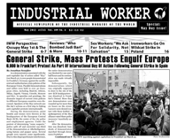

Submitted on Thu, 10/04/2012 - 6:53pm
Headlines:
- Work People's College: Reviving An Old Tradition Of Educating IWW Agitators
- Milwaukee Pizza Factory Workers Strike
- Prisoners Stage Hunger Strike In North Carolina
Features:
- Work People's College: Reviving An Old Tradition Of Educating IWW Agitators
- Self-Employment, Or The Illusion Of Freedom
- International Solidarity: Spotlight On Africa
Download a free PDF of this issue.
Submitted on Thu, 10/04/2012 - 6:41pm
Headlines:
- Snapshots Of The Student Movement In Montréal
- Wobblies Support Fired IWW Jimmy John’s Worker In Florida
- Workers Strike At French Telecommunications Subcontractor In Casablanca
Features:
- Workers' Power: The Wages System
- Organizing In The Nonprofit Industrial Complex
- A Wobbly Report From Greece
Download a free PDF of this issue
Submitted on Mon, 08/13/2012 - 10:13pm
Fellow Workers!
The annual IWW General Convention is a little more than 2 weeks away! This annual event, set to take place this year in Portland, Oregon, Sept. 1-2, is an exciting opportunity to learn more about the structure of the union, ask questions of our administration, and meet fellow workers from all around the world.
Voting rights at General Convention are restricted to elected branch delegates, but as an IWW member you can still attend and have voice in the sessions. To do so, you need to register right away at our website: gencon.iww.org. If you were already planning on attending, and/or you are an elected branch delegate to the GC, please register right now!
Submitted on Sun, 07/08/2012 - 10:31pm
Headlines:
- Federal Judge Finds Jimmy John’s Guilty Of Illegal Firings
- Huge Victory For Immigrant Wobblies At Brooklyn Hummus Producer
- Palestinian Prisoners Join Mass Hunger Strike
Features:
- A Report From The Women With Initiative Meeting In Warsaw
- Phoenix Cab Drivers: “We’re 21st Century Slaves”
- May Day News & Photos From Around The Globe
Download a Free PDF of this issue.
Submitted on Tue, 05/22/2012 - 7:57pm
The International Solidarity Commission of the Industrial Workers of the World condemns the actions taken by the Mossos d'Esquadra, Catalonia police. Laura Gómez, the General Secretary of CGT-Barcelona was arrested by the Mossos d'Esquadra for trumped up charges that have no basis in fact. It is obvious that this is nothing more than an act of repression and intimidation in response to the growing workers' mobilizations in Spain. We demand the immediate release of Laura Gómez and the withdrawal of all charges.
We are in solidarity with, and commend, the CGT-Barcelona, Laura Gómez, and the rest of Spain's working class for their ongoing struggle against police repression and labour injustice.
Solidarity Forever,
International Solidarity Commission
Industrial Workers of the World.